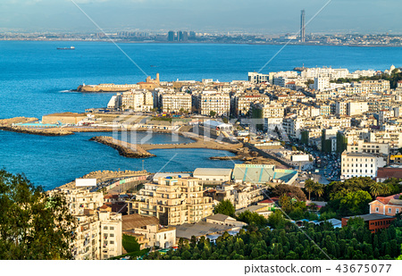
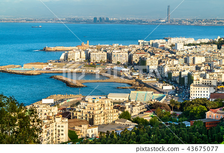

Morocco,[note 3] officially the Kingdom of Morocco,[note 4] is the northwesternmost country in the Maghreb region of North Africa. It overlooks the Mediterranean Sea to the north and the Atlantic Ocean to the west, and has land borders with Algeria to the east, and the disputed territory of Western Sahara to the south. Morocco also claims the Spanish exclaves of Ceuta, Melilla and Peñón de Vélez de la Gomera, and several small Spanish-controlled islands off its coast.[16] It spans an area of 446,300 km2 (172,300 sq mi)[17] or 710,850 km2 (274,460 sq mi),[b] with a population of roughly 37 million. Its official and predominant religion is Islam, and the official languages are Arabic and Berber; the Moroccan dialect of Arabic and French are also widely spoken. Moroccan identity and culture is a vibrant mix of Berber, Arab, and European cultures. Its capital is Rabat, while its largest city is Casablanca.[18] Inhabited since the Paleolithic Era over 90,000 years ago, the first Moroccan state was established by Idris I in 788. It was subsequently ruled by a series of independent dynasties, reaching its zenith as a regional power in the 11th and 12th centuries, under the Almoravid and Almohad dynasties, when it controlled most of the Iberian Peninsula and the Maghreb.[19] In the 15th and 16th centuries, Morocco faced external threats to its sovereignty, with Portugal seizing some territory and the Ottoman Empire encroaching from the east. The Marinid and Saadi dynasties otherwise resisted foreign domination, and Morocco was the only North African nation to escape Ottoman dominion. The Alaouite dynasty, which rules the country to this day, seized power in 1631, and over the next two centuries expanded diplomatic and commercial relations with the Western world. Morocco's strategic location near the mouth of the Mediterranean drew renewed European interest; in 1912, France and Spain divided the country into respective protectorates, reserving an international zone in Tangier. Following intermittent riots and revolts against colonial rule, in 1956 Morocco regained its independence and reunified. Since independence, Morocco has remained relatively stable. It has the fifth-largest economy in Africa and wields significant influence in both Africa and the Arab world; it is considered a middle power in global affairs and holds membership in the Arab League, the Union for the Mediterranean, and the African Union.[20] Morocco is a unitary semi-constitutional monarchy with an elected parliament. The executive branch is led by the King of Morocco and the prime minister, while legislative power is vested in the two chambers of parliament: the House of Representatives and the House of Councillors. Judicial power rests with the Constitutional Court, which may review the validity of laws, elections, and referenda.[21] The king holds vast executive and legislative powers, especially over the military, foreign policy and religious affairs; he can issue decrees called dahirs, which have the force of law, and can also dissolve the parliament after consulting the prime minister and the president of the constitutional court. Morocco claims ownership of the non-self-governing territory of Western Sahara, which it has designated its Southern Provinces. In 1975, after Spain agreed to decolonise the territory and cede its control to Morocco and Mauritania, a guerrilla war broke out between those powers and some of the local inhabitants. In 1979, Mauritania relinquished its claim to the area, but the war continued to rage. In 1991, a ceasefire agreement was reached, but the issue of sovereignty remained unresolved. Today, Morocco occupies two-thirds of the territory, and efforts to resolve the dispute have thus far failed to break the political deadlock.
The Morocco national football team (Arabic: منتخب المغرب لكرة القدم, Berber languages: ⵜⴰⵔⴰⴱⴱⵓⵓⵜ ⴰⵏⴰⵎⵓⵔ ⵏ ⵍⵎⵖⵔⵉⴱ), nicknamed "the Atlas Lions", represents Morocco in men's international football competitions. It is controlled by the Royal Moroccan Football Federation, also known as FRMF. The team's colours are red and green. The team is a member of both FIFA and the Confederation of African Football (CAF). Internationally, Morocco won the 1976 African Cup of Nations, two African Nations Championships and FIFA Arab Cup once. They have participated in the FIFA World Cup six times.[5] Their best result came in 1986, when they were the first and the only African and Arabs national team to finish top of a group at the FIFA World Cup. In that 1986 FIFA World Cup Group F, Morocco finished ahead of England, Portugal and Poland after holding both Poland and England to goalless draws, and beating Portugal 3–1. Thus they became the first African national football team, and only the second national football teams from outside Europe and the Americas (after North Korea in 1966 World Cup), to reach the second round at the World Cup. In the subsequent round of 16 knockout, they narrowly lost to eventual runners-up West Germany 1–0. The traditional rivals of Morocco are mainly Algeria, Tunisia and Egypt. Morocco has also had very competitive matches against Gabon and Ivory Coast, due to their frequent meetings in recent years. Morocco has many talented players born in Europe and active in the top European leagues (Premier League, LaLiga, Serie A, Bundesliga, Ligue 1 and Eredivisie, and is considered one of the best teams in African football history. The Atlas Lions were considered one of the best national football team in the world when they ranked 10th in the FIFA World Rankings in April 1998, as the first African national team in history to be ranked by FIFA in the top ten national football teams. They are also the only African national team in history to have been at the top of the FIFA World Rankings for three consecutive years, by FIFA from 1997 to 1999. As of February 2022, Morocco is ranked as the 24th best national team in the world.[6]
.png) 

Algeria,[c] officially the People's Democratic Republic of Algeria, is a country in the Maghreb region of North Africa. The country is the largest country by total area in Africa and in the Arab world, and is bordered to the northeast by Tunisia; to the east by Libya; to the southeast by Niger; to the southwest by Mali, Mauritania, and Western Sahara; to the west by Morocco; and to the north by the Mediterranean Sea. It has a semi-arid geography, with most of the population living in the fertile north and the Sahara dominating the geography of the south. Algeria covers an area of 2,381,741 square kilometres (919,595 sq mi), making it the world's tenth largest nation by area, and the largest nation in Africa.[9] With a population of 44 million, Algeria is the ninth-most populous country in Africa, and the 32nd-most populous country in the world. The capital and largest city is Algiers, located in the far north on the Mediterranean coast. Pre-1962 Algeria has seen many empires and dynasties, including ancient Numidians, Phoenicians, Carthaginians, Romans, Vandals, Byzantines, Umayyads, Abbasids, Rustamids, Idrisids, Aghlabids, Fatimids, Zirids, Hammadids, Almoravids, Almohads, Zayyanids, Spaniards, Ottomans and finally, the French colonial empire. The vast majority of Algeria's population is Arab-Berber, practicing Islam, and using the official languages of Arabic and Berber. However, French serves as an administrative and educational language in some contexts. The main spoken language is Algerian Arabic. Algeria is a semi-presidential republic, with local constituencies consisting of 58 provinces and 1,541 communes. Algeria is a regional power in North Africa, and a middle power in global affairs. It has the highest Human Development Index of all non-island African countries and one of the largest economies on the continent, based largely on energy exports. Algeria has the world's sixteenth-largest oil reserves and the ninth-largest reserves of natural gas. Sonatrach, the national oil company, is the largest company in Africa, supplying large amounts of natural gas to Europe. Algeria's military is one of the largest in Africa, and has the largest defence budget on the continent. It is a member of the African Union, the Arab League, the OIC, OPEC, the United Nations, and the Arab Maghreb Union, of which it is a founding member.
The Algeria national football team (Arabic: منتخب الجزائر لكرة القدم) represents Algeria in men's international football and is governed by the Algerian Football Federation. The team plays their home matches at the Mustapha Tchaker Stadium in Blida and 5 July Stadium in Algiers. Algeria joined FIFA on 1 January 1964, a year and a half after gaining independence. They are the current champions of the FIFA Arab Cup. The North African team has qualified for four World Cups in 1982, 1986, 2010 and 2014. Algeria has won the Africa Cup of Nations twice, once in 1990, when they hosted the tournament, and again in Egypt in 2019 and they also won the 2021 FIFA Arab Cup. They were also champions of the 1991 Afro-Asian Cup of Nations, the men's football tournament of the 1978 All-Africa Games and the men's football tournament of the 1975 Mediterranean Games. The traditional rivals of Algeria are mainly Morocco, Tunisia and Egypt. Algeria has also had very competitive matches against Nigeria, especially in the 1980s during Algeria's best football generation, against Mali due to sharing common border and a long-standing competitive rivalry, and against Senegal, where Algeria's first global success began. For the Algerians, their biggest victory was their 2–1 win against West Germany during the 1982 FIFA World Cup in which the African nation shocked the world. Algeria has produced many talented players throughout time and is considered one of the best teams in African football history. At the 2014 World Cup in Brazil, Algeria became the first African team to score at least four goals in a match at a World Cup, which was against South Korea.